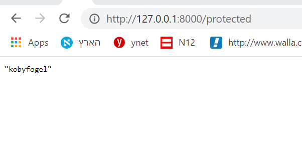

חסר תמיכה בפרונט אנד כחלק מהפעלת האפליקציה. כמו בהמון דברים שכבר ניסיתי לבצע ב fast-api. הכל תמיד מסתמך על זה שתהיה מערכת פרונט אנד נפרדת שתשלח ג’ייסונים ותקבל אותם בחזרה
מה חסר לך שה־frontend יבצע עבורך?
יקבל נתונים מהמשתמש וישלח אותם לראוטים שהם מספקים. בדיוק מה שאני מנסה לעשות ולא מצליח
אתה יכול לכתוב את ה־JS, זה לא סיפור (זה בעיקר להעתיק ולהדביק קוד קיים)
אם מאוד מאוד לא בא לך, אפשר להשתמש ב־httpx כדי לשלוח בקשת HTTP
לייק 1
אבדוק את זה. תודה רבה על העזרה
לייק 1
לא הצלחתי להפעיל את httpx משום מה, יש שם מספר דברים שצריך להגדיר בעבודה עם שרת מקומי, והעדפתי ללכת על פתרון ה- JS למרות חוסר הניסיון והידע שלי בזה. היה נראה לי יותר הגיוני להסיר שכבה מהשרת, במקום להוסיף לו אחת.
עשיתי פונקצית JS שלוקחת ישירות את הנתונים מהטופס, מאמתת אותם, שולחת אותם לראוט של fastapi-Users, ומבצעת פעולות בהתאם לתשובה שחוזרת ממנו. בינתיים הכל עובד בסדר, אבל אני תוהה לגבי נקודה מסויימת.
הראוט שיצרתי שמפעיל את הפונקציה שמרנדרת את הטופס הוא מסוג get. לא הצלחתי להגדיר אותו כפוסט, וגם בעצם לא צריך, מאחר והפונקציה עצמה לא מקבלת נתונים. הם נשאבים ישירות מהטופס בעמוד, באמצעות JS. השאלה שלי היא האם זה בסדר ומקובל, ולא bad practice…
אם אני מנסה להגדיר את אותו הראוט בדיוק כ- GET, אני מקבל Method Not Allowed.
לייק 1
זה נשמע טוב מאוד. רק הנתונים מהטופס צריכים להישלח ב־POST
הפתרון הזה כבר לא רלוונטי. לאחר שיישמתי, מסתבר שהסיפרייה fastapi-userrs לא מנהלת סשן, ולא מייצרת קוקי. הצלחתי ליישם על ידי יצירת הקוקי ב- JS, אבל זה לא טוב, כי לא ניתן לייצר שם httpcoookie.
כל דרך שאני מנסה כדי לפתור את זה ולהגיע למצב שכל המכלול עובד, מעמידה בפני איזה שהוא מחסום שאני לא מצליח לעבור, בכל פעם במקום אחר.
מצאתי גם דרך ליצור ראוט, ולשלוח את הנתונים מהטופס לראוט לוגאין שהסיפרייה מספקת. אבל הדרך היחידה היא באמצעות redirectresponse. ואז הטוקן חוזר לי באובייקט של סטרלט ריספונס, ואני לא מצליח להוציא ממנו את הנתונים
{kind=link}
{kind=link}
עשיתי ב- JS פונקציה ששולחת את הנתונים מהטופס לראוט שלהם ליצירת טוקן ו- קוקי
{kind=link}
חוזר טוקן
{kind=link}
לא חוזרת קוקי
{kind=link}
לעומת זאת:
זה ראוט מוגן:
{kind=link}
אם אני מייצר את הקוקי לבד ב- JS:
{kind=link}
מצליח להיכנס לראוט:

הבעיה היא שני לא יכול לייצר שם httpcookie.
לעומת זאת, אם אני מפנה לרואט שלהם ישירות מהראוט של הטופס שלי כדי שאצליח ליצור עם פייתון את הקוקי, אז הדרך היחידה שידוע לי עליה היא עם redirect. ואז הטוקן חוזר אלי כאובייקט של starlette.response.redirect. ואני לא מצליח בשום צורה לחלץ ממנו את המידע.
מקווה שהייתי ברור…
כשאני מנסה לעשות את זה מפייתון, אז הפונקציה נראית משהו בסגנון הזה:
{kind=link}
{kind=link}
אתה שולח ל־JWT שלא אמור ליצור קוקי. http://localhost:8000/auth/cookie אמור ליצור קוקי.
זה כתוב בתיעוד 
עשיתי למיטב הבנתי כמו בדוקומנטציה:
{kind=link}
אני לא מקבל חזרה את מה שהם כותבים שאני אמור לקבל ב- headers:
{kind=link}
אני מקבל טוקן, בדיוק כמו מקודם, בבודי
{kind=link}
גם אין קוקי
{kind=link}
אלה הגדרות הבקאנד. כמובן ניסיתי גם לפני שביטלתי את JWT. עשיתי ניסיון גם להסיר לגמרי את ההגדרה שלו. בכל אופן, הבקאנד עבור קוקי מוגדר
{kind=link}
אני אצטרך גישה לכל הקוד ולהריץ אותו אצלי כדי לראות למה זה קורה
מכייוון שנגמרו לי הרעיונות אתמול לגבי הסיפרייה הזאת, המשכתי לעבוד על המערכת שאני בניתי.
המערכת מייצרת jwt טוקן על פי הדוקומנטציה של auth2, ומכניסה אותו ל-cookie httponly.
בכל ניסיון כניסה לראוט מוגן, הטוקן נבדק. אם הוא לא קיים, לא נכון, או זמנו עבר, הקוקי נמחקת והמשתמש מופנה להתחברות.
יצרתי גם ראוט לוגאאוט שמוחק את הקוקי מהדפדפן.
צרתי דיפנדנסי עבור ראוט מוגן רק עבור יוזר מחובר, ועוד דיפנדנסי עבור קבלת יוזר מחובר אם יש כזה, ואם לא אז None, אך עדיין ניתן להיכנס לראוט.
כל מה שנותר לעשות שם זה שיפורים קטנים בניהול הודעות עבור משתמש, שלא הצליח להיכנס לראוט מסוים. אני ממשיך בינתיים לעבוד על זה כרגע עד למוצר מוגמר \ עד שנבין איך אפשר בכ"ז לעבוד עם fastapi-Users.
אשמח אם תעיף מבט על מה שעשיתי, אולי בכל זאת תרצה שנשתמש בזה…
עריכה: הוספתי הודעות רלוונטיות למשתמש, בכל פעם שאינו מצליח להכנס לראוט מוגן, מכל סיבה שהיא. בנוסף הוספתי הפנייה שמעבירה אותו לעמוד המוגן שאותו הוא חיפש, וזאת לאחר ההתחברות.
לייק 1
אני אצטרך שתעשה PR עם העבודה על fastapi-users כדי לראות את ה־diff, בבקשה
עשיתי…
עשיתי PR לשתי הגירסאות.
עבור גירסת api-Users, טיפלתי עד כמה שיכלתי בקונפליטקים שנוצרו בעקבות כך שהיא חייבת להיות זאת שמנהלת את טבלת user. עשיתי את המקסימום על ידי ירושה ממחלקת base שלהם, ושיניתי בהתאם את הריליישנז של כל הטבלאות.
ישנם קונפליקטים נוספים שבהם לא טיפלתי, מאחר ואין בה password עבור יוזר, אלא hashed_password. ישנם טסטים של אחרים שמחפשים את השורה הזאת, והם לא עוברים כרגע.
פירטתי כמיטב יכולתי בתיאור ה- PR.
לגבי הגירסה לניהול משתמשים שאני כתבתי: אין בה שום קונפליקטים, היא עובדת באופן מלא, כולל תמיכה בפרונט אנד. עקרונית היא מוכנה למיזוג מהבחינה הזאת. למרות זאת, הגירסה שב- PR תצטרך לעבור מספר שינויים קוסמטיים, במידה ויוחלט להשתמש בה. גם לגביה פירטתי כמיטב יכולתי בתיאור ה- PR.
2 לייקים